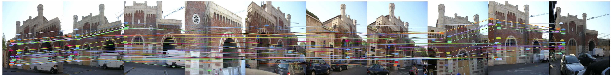

with Federica Arrigoni and Eleonora Maset

Matches between images are represented by partial permutations, which constitute the so-called Symmetric Inverse Semigroup. Synchronization of these matches is tantamount to joining them in multi-view correspondences while enforcing loop-closure constraints. Our solution is based on a spectral decomposition, resulting in a closed-form efficient algorithm, that can efficiently handle datasets of hundreds of images.
MATLAB code.